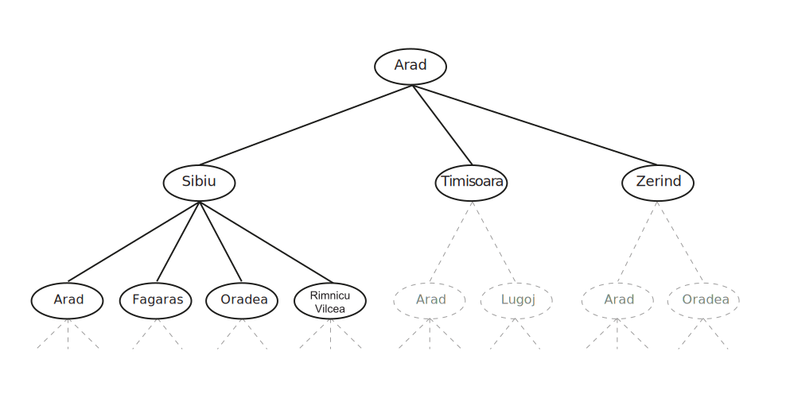

Problem solving (searching)
ü߆ I2AI_3 ‚Äî Introduction to AI
Problem-solving agents
Agent
Agents that plan ahead by considering a sequence of actions that form a path to a goal state are called problem-solving agents (Russel and Norvig 2022, 81)
- The computational process it undertakes is search
- The representations the agents use are atomic representations
- There are search algorithms for several environments.
Here only simple environments are considered (episodic, single agent, fully observable, deterministic, static, discrete, and known).
–> We assume that information about the environment are given (e.g., a map).
There are also search algorithms for problems in partially observable, nondeterministic, unknown, and continuous environments (i.e., complex environments) like local search methods (e.g., hill-climbing search, local beam search, evolutionary algorithms). For details please see Russel and Norvig (2022).
Problem-solving process
In simple environments, agents can follow a four-phase-problem-solving process (Russel and Norvig 2022, 81–82):
- Goal formulation: goals organize behavior by limiting the objectives and hence the actions to be considered
- Problem formulation: the agents devices a description of the states and actions necessary to reach the goal—an abstract model of the relevant part of the environment
- Search: the agent simulates sequences of actions in its model, searching until it finds a sequence that reaches the goal (i.e., the solution)
- Execution: the agent executes the actions in the solution, one at a time
Search problem
A search problem can be defined formally as (Russel and Norvig 2022, 83):
- The state space: a set of possible states the environment can be in
- The initial state: the state that the agent starts
- Goal states: a singe goal state, a small set of alternative goal states, or a property that applies to many states (e.g, no dirt in any location)
- The actions available to the agent
ACTIONS(s)wheresis the current state - A transition model: describes what each action does.
RESULT(s,a)returens the state that results from doing actionain states. - An action cost function: gives the numeric cost of applying action
ain statesto reach states'(ACTION-COST(s,a,s') - A path: a sequence of actions
- A solution: a path from the initial state to the goal state
Search problems are models

Figure 1 depicts the search problem as model, the state space graph (Russel and Norvig 2022, 82–84):
- State space: cities (vertices, each state occurs only once)
- Initial state: Arad
- Goal state: Bucharest (goal test:
Is state == Bucharest?) - Actions: directed edges between the vertices (paths)
- Action costs: numbers on the paths
The model is an abstract mathematical description, here a simple atomic state description. The model is an abstraction as it ignores many details of the reality (e.g., weather and scenery).
A good problem formulation has the right level of detail (i.e., an appropriate level of abstraction).
The choice of a good abstraction involves removing as much detail as possible while retaining validity and ensuring that the abstract actions are easy to carry out. An abstraction is valid if any abstract solution can be elaborated into a solution in the more detailed world.
Real world problems
Examples for search problems are (Russel and Norvig 2022, 87–88):
- Route-finding problems (e.g., car navigation, airline travel-planning)
- Touring problems (e.g., the traveling salesperson problem)
- VLSI layout problems (positioning millions of components and connections on a chip)
- Robot navigation (e.g., vacuum robots)
- Automatic assembly sequencing of complex objects (e.g., protein design)
Search algorithms
A search algorithm takes a search problem as input and returns a solution, or an indication of failure (Russel and Norvig 2022, 89).
Here we consider algorithms that superimpose a search tree over the state-space graph, forming various paths from the initial state, trying to find a path that reaches a goal state.
Search trees

In Figure 2, nodes that have been expanded are white with bold letters; nodes on the frontier that have been generated but not yet expanded are in white and regular letter; the set of states corresponding to these two types of nodes are said to have been reached. Nodes that could be generated next are shown in faint dashed lines.
A search tree is a “what if” tree of plans and their outcomes.
- The start state is the root node,
- children correspond to successors,
- nodes show states, but correspond to PLANS that achieve those states
There are lots of repeated structure in the search tree. Thus, for most problems, the whole tree can never be actually built. In practice, both state space graphs and search trees are constructed on demand and as little as possible.
Uniformed search
Informed search
✏️ Exercises
I2AI_3 E1
Define in your own words the following terms:
- …